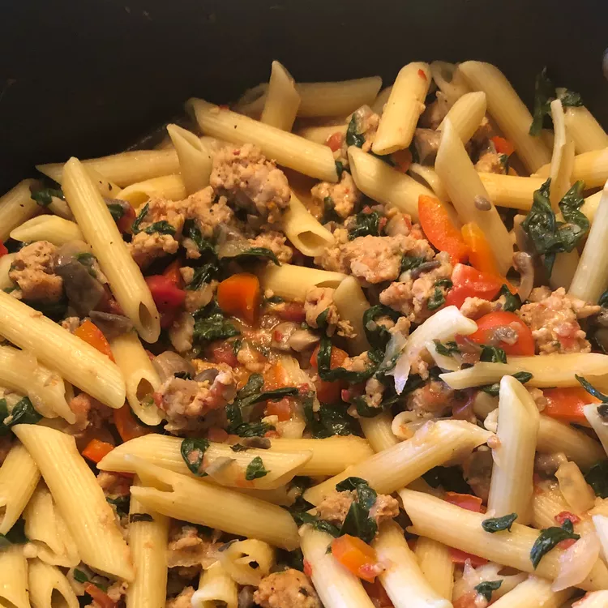

Sausage Pasta

This sausage pasta is a super easy recipe to throw together, and with the addition of different vegetables, you can make lots of variations.
Ingredient
- 1 tablespoon olive oil
- 1 pound spicy Italian sausage
- 1 onion, chopped
- 4 cloves garlic, minced
- 1 (14.5 ounce) can chicken broth
- 1 (14.5 ounce) can diced tomatoes
- 1 teaspoon dried basil
- 1 (10 ounce) package frozen chopped spinach
- ½ cup grated Parmesan cheese
Steps
- Gather the ingredients.
- Heat oil in a large skillet over medium-high heat. Cook and stir sausage in the hot skillet until no longer pink, about 5 minutes. Add onion and garlic to the skillet; cook and stir for 2 minutes. Stir in broth, tomatoes, and basil.
- Cook over medium heat until liquid reduces slightly, about 5 minutes. Add chopped spinach; cover the skillet, reduce heat, and simmer until spinach is tender.
- Add pasta to the skillet and mix until well combined. Sprinkle with Parmesan cheese; serve warm.